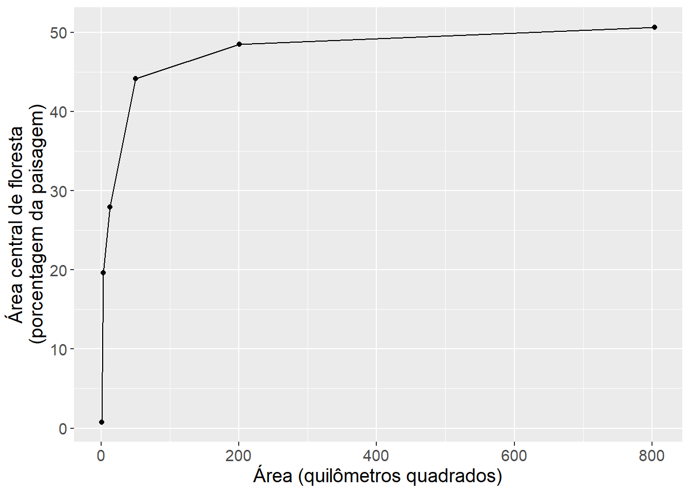

2 Capítulo Métricas
Carregar os pacotes necessarios:
2.1 Pergunta 1
Descreva brevemente 2 métricas de cada nível (patch, class, landscape) usando ajudar (usando ? e/ou list_lsm), aulas ("Métricas da paisagem: Modelo mancha-corredor-matriz" e "Índices de Paisagem e Análises de Padrões Espaciais" ) e/ou a leitura disponivel no Google Classroom (Base teórica 4 Dados, métricas, analises). Incluindo na descrição - o nome, porque serve, unidades de medida, e relevância ecológica.
2.1.1 resposta
Para responder a pergunta você deve revisar as aulas e o conteúdo no capitulo Métrica. Métricas (descrição - o nome, porque serve, unidades de medida, e relevância ecológica) para todos os níveis foram apresentadas nas aulas “Métricas da paisagem: Modelo mancha-corredor-matriz” e “Índices de Paisagem e Análises de Padrões Espaciais”. Exemplo com uma métrica tamanho (área):
- Nível de mancha - tamanho da mancha.
- Nível de classe - tamanho média das manchas.
- Nível de paisagem - tamanho média das manchas.
Podemos verificar as métricas disponíveis no pacote landscapemetrics com o seguinte código:
# ajudar para entender a função
?landscapemetrics::list_lsm
# Nível de mancha
landscapemetrics::list_lsm(level = "patch",
type = "area and edge metric")
# Nível de classe
landscapemetrics::list_lsm(level = "class",
type = "area and edge metric")
# Nível de paisagem
landscapemetrics::list_lsm(level = "landscape",
type = "area and edge metric")
# todos as métricas com area
landscapemetrics::list_lsm(metric = "area")
# detalhes sobre a métrica (unidade etca)
?landscapemetrics::lsm_p_area2.2 Pergunta 2
O modelo mancha-corredor-matriz é frequentemente adotado na ecologia da paisagem. Com base nas aulas teóricas e usando os valores no objeto minha_amostra_1000 apresentados na tabela acima, identificar qual classe representar a matriz na paisagem. Há alguma informação faltando que limita a sua capacidade de identificar qual classe representar a matriz? Se sim, o que precisa ser adicionado? Justifique as suas respostas de forma clara e concisa.
2.2.1 resposta
Para responder a pergunta você preciso entender a definação da “matriz” no contexto de Ecologia da Paisagem - modelo de mancha-corrredor-matriz (aula - Métricas da paisagem: Modelo mancha-corredor-matriz). Neste caso, class 0 é o classe dominante - com a área core cobrindo quase 67% da paisagem. Assim sendo, classe 0 e a matriz. Não há necessidade de informações adicionais. Se os valores estivessem menores e mais próximos (por exemplo, 41 e 44%), provavelmente precisaríamos incluir métricas adicionais para representar padrões espaciais na paisagem, como coesão, tamanho do maior mancha etca.
2.3 Pergunta 3
Em vez de extensão, você preciso incluir o tamanho (área do circulo) correspondente a cada raio. Incluir uma cópia do código ajustado para produzir uma figura com tamanho (área em quilômetros quadrados) no eixo x.
2.3.1 resposta
Seguindo o exemplo do capítulo, sabemos que os buffers têm formato de círculo, potanto:
A extensão seria o diametro da buffer (raio x 2).
Sabemos que a área de um círculo é pi vezes o raio elevado ao quadrado. Portanto, estimar a área do buffer em metros quadrados: pi X (raio 2).
E para finalizar converta o valor da área em quilômetros quadrados.
No R, podemos fazer isso, ajustando o codigo no capítulo com a função mutate(). Usamos mutate() para fazer novas colunas com o valor da área em metros quadrados area_m2 e quilômetros quadrados area_km2. Mantemos os nomes curtos, e depois atualize o rótulo do eixo para refletir a nova coluna com valores de área, especificando o nome do eixo x com a função labs().
amostras_metrica |>
filter(class==1) |>
mutate(ext_m = 2*raio,
area_m2 = 3.14*(raio^2)) |>
mutate(area_km2 = area_m2/1000000) |>
ggplot(aes(x = area_km2, y = value)) +
geom_point() +
geom_line() +
labs(x = "Área (quilômetros quadrados)",
y = "Área central de floresta\n(porcentagem da paisagem)") +
theme(text = element_text(size = 14))
2.4 Pergunta 4
Em menos de 200 palavras apresente a sua interpretação do gráfico em figura 2.4.
2.4.1 resposta
A proporção de floresta muda com a escala espacial, representado pela extensão do buffer em torno do ponto amostral. Existe uma relação positiva entre o percentual de área central e a extensão. A proporção de floresta aumenta de zero a 51 por cento, mas a relação não é linear. Os valores aumentam rapidamente até extensões de 8 km (6% por quilometro em média entre 0 e 8 quilômetros). Após isso a curva parece atingir uma assíntota (aumentando 0.25% por quilometro entre 8 e 16 quilômetros).
2.5 Pergunta 5
Comparar os resultados apresentados nas figuras com modelos lineares e não-lineares. Como podemos estabelecer qual seria o melhor modelo? Qual modelo seria mais adequado para identificar limiares no padrão de área central de floresta?
2.5.1 resposta
Uma inspeção visual sugere que um modelo linear sem qualquer transformação tem os maiores intervalos de confiança e é o pior modelo. Um modelo linear com dados transformados parece ajustar-se proximo aos dados. O modelo não linear mostra melhor os padrões nos dados originais. Mas essas avaliações são subjetivas. Deveríamos realizar testes estatísticos para confirmar estas avaliações visuais. Todos os modelos melhorariam (por exemplo os intervalos de confiança ficariam menores) se aumentássemos o tamanho da amostra calculando a métrica com mais distâncias de buffer.
2.6 Pergunta 6
Aumentar o tamanho amostral na analise. Usando os exemplos de codigo anteriores, aumentar o numero de buffers entre 125 m e 16 km. i) Calcular a metrica cpland para 12 distâncias de bufferes e montar dados novas (isso é cinco distâncias novas e as sete distâncias originais) em um objeto com nome de "amostras_metrica_nova". ii) usando ggplot2 fazer um gráfico com os novos dados mostrando valores de extensão no eixo x e proporção da floresta central no eixo y. Ajustar o codigo para incluir intervalos de confiança junto com o modelo linear. Comparar os resultados apresentados nas figuras com modelos lineares sem transformação. O que aconteceu com o ajuste do modelo e os intervalos de confiançã? Foi útil incluir mais distâncias? Justifique as suas respostas de forma clara e concisa. Inclua cópias do seu código e gráficos na sua resposta. Você pode usar o printscreen para mostrar o RStudio com seu código e gráficos.
2.6.1 resposta
Passos para desenvolver uma resposta:
Decida as distâncias para os cinco novos buffers.
Calcular a métrica nos novos buffers.
Adicione os novos dados junto com as setes distâncias originais.
Faça o gráfico.
Olhando o gráfico “Comparação de padrões lineares e não-lineares.” vemos que quando os pontos estão mais próximos os intervalos de confiança são menores. Os intervalos de confiança são maiores onde há maiores distâncias entre os pontos. Portanto, incluiremos mais buffers entre 1 e 16 quilômetros.
O código abaixo fará isso em R:
Lembrando o codigo para as buffers originais:
# raio 250 metros
sample_lsm(floresta_2020, y = rio_pontos_31976[1, ],
size = 250, shape = "circle",
metric = "cpland") |>
mutate(raio = 250) -> minha_amostra_250
# raio 500 metros
sample_lsm(floresta_2020, y = rio_pontos_31976[1, ],
size = 500, shape = "circle",
metric = "cpland") |>
mutate(raio = 500) -> minha_amostra_500
# raio 1 km (1000 metros)
sample_lsm(floresta_2020, y = rio_pontos_31976[1, ],
size = 1000, shape = "circle",
metric = "cpland") |>
mutate(raio = 1000) -> minha_amostra_1000
# raio 2 km
sample_lsm(floresta_2020, y = rio_pontos_31976[1, ],
size = 2000, shape = "circle",
metric = "cpland") |>
mutate(raio = 2000) -> minha_amostra_2000
# raio 4 km
sample_lsm(floresta_2020, y = rio_pontos_31976[1, ],
size = 4000, shape = "circle",
metric = "cpland") |>
mutate(raio = 4000) -> minha_amostra_4000
# raio 8 km
sample_lsm(floresta_2020, y = rio_pontos_31976[1, ],
size = 8000, shape = "circle",
metric = "cpland") |>
mutate(raio = 8000) -> minha_amostra_8000
# raio 16 km
sample_lsm(floresta_2020, y = rio_pontos_31976[1, ],
size = 16000, shape = "circle",
metric = "cpland") |>
mutate(raio = 16000) -> minha_amostra_16000Podemos agora seguir o exemplo original e incluir novas distâncias (1,5km; 3km; 6km; 11km e 14km):
# novas buffers
# raio 1.5 km
sample_lsm(floresta_2020, y = rio_pontos_31976[1, ],
size = 1500, shape = "circle",
metric = "cpland") |>
mutate(raio = 1500) -> minha_amostra_1500
# raio 3 km
sample_lsm(floresta_2020, y = rio_pontos_31976[1, ],
size = 3000, shape = "circle",
metric = "cpland") |>
mutate(raio = 3000) -> minha_amostra_3000
# raio 6 km
sample_lsm(floresta_2020, y = rio_pontos_31976[1, ],
size = 6000, shape = "circle",
metric = "cpland") |>
mutate(raio = 6000) -> minha_amostra_6000
# raio 11 km
sample_lsm(floresta_2020, y = rio_pontos_31976[1, ],
size = 11000, shape = "circle",
metric = "cpland") |>
mutate(raio = 11000) -> minha_amostra_11000
# raio 14 km
sample_lsm(floresta_2020, y = rio_pontos_31976[1, ],
size = 14000, shape = "circle",
metric = "cpland") |>
mutate(raio = 14000) -> minha_amostra_14000
# juntar dados objeto novo com nome de "amostras_metrica_nova"
bind_rows(minha_amostra_250,
minha_amostra_500,
minha_amostra_1000,
minha_amostra_1500,
minha_amostra_2000,
minha_amostra_3000,
minha_amostra_4000,
minha_amostra_6000,
minha_amostra_8000,
minha_amostra_11000,
minha_amostra_14000,
minha_amostra_16000) -> amostras_metrica_novaGráfico.
amostras_metrica_nova |>
filter(class==1) |>
mutate(ext_m = 2*raio,
ext_km = (2*raio)/1000) |>
# fazer o gráfico
ggplot(aes(x = ext_km, y = value)) +
geom_point(size = 4) +
geom_line() +
stat_smooth(method = "lm", se = TRUE, color = "green",
linetype = "dashed") +
labs(x = "Extensão (quilômetros)",
y = "Área central de floresta\n(porcentagem da paisagem)") +
theme_bw() +
theme(text = element_text(size = 18)) `geom_smooth()` using formula = 'y ~ x'2.7 Pergunta 7
Com base nos resultados apresentados (figura e tabela) caracterisar as mudançãs na paisagem em função de extensões diferentes. Olhando os gráficos prever como seria o padrão para extensões maiores (lembrando que valores são doubrados - por exemplo raio de 250 metros gerar uma extensão de 500 metros). Seria relevante repetir incluindo calculos para extensões maiores (por exemplo 64 km e 128 km)? Justifique sua caracterização e previsões de forma clara e concisa, apoie sua escolha com exemplos da literatura científica.
2.7.1 resposta
2.8 Pergunta 8
Usando como base o conteudo das aulas, leitura disponivel no Google Classroom (Base teórica 4 Dados, métricas, analises), e/ou exemplos apresentados aqui no tutorial, selecione pelo menos oito métricas de nível classe para caracterizar a paisagem de estudo e objectivos da sua projeto em grupo. Justifique sua seleção de forma clara e concisa, apoie sua escolha com exemplos da literatura científica.